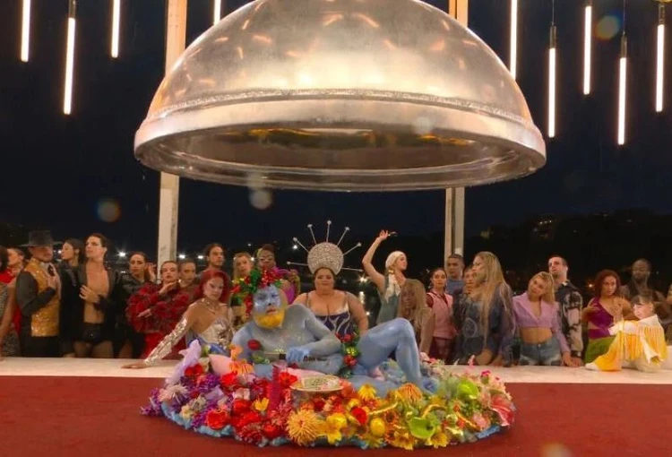
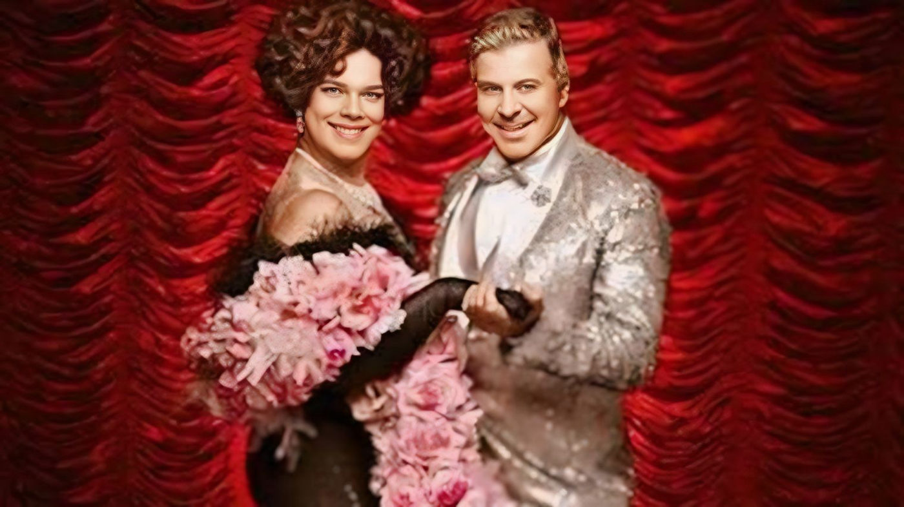
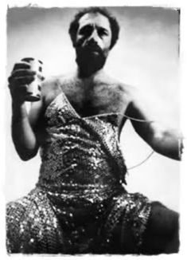
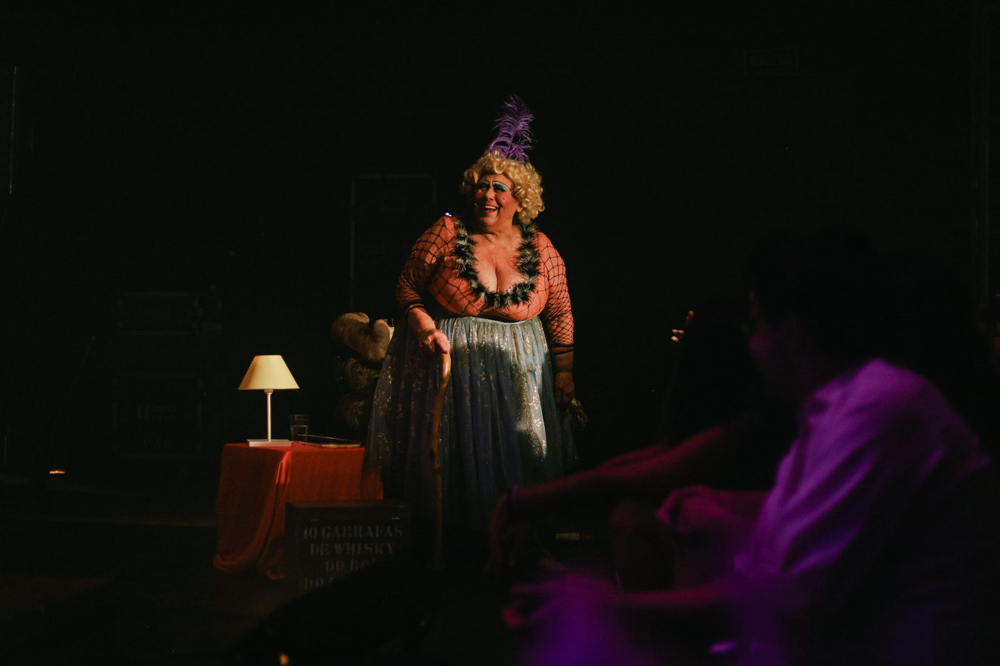

Foto — Divulgação
Foto — Divulgação
Artigo de Opinião
Páginas da Vida, e o seu remake Lusitano
Entre nostalgia e estratégia: por que uma história que já foi sucesso atravessa o Atlântico e volta como novidade?…
27 matérias — página 1 de 2
Foto — Divulgação
Entre nostalgia e estratégia: por que uma história que já foi sucesso atravessa o Atlântico e volta como novidade?…






